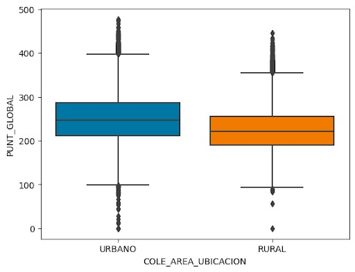
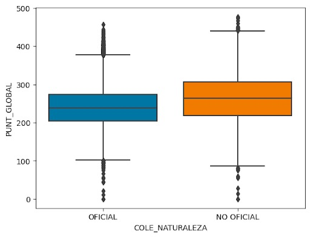
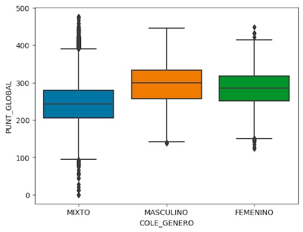

¿Reúnes lo necesario para aplicar a la beca generación E?
¡En esta pagina web sabrás si tienes lo necesario para aplicar a una beca generación e en Colombia. Se dará a conocer los diferentes factores que más afectan tus posibilidades de ganar esta beca y podrás definir tu plan de estudios para cumplir con este logro. Por último, te brindamos la oportunidad de saber si serás o no candidato de esta gran oportunidad ingresando algunos datos sencillos en el link proporcionado.!
Te sorprenderá que los aspectos más relevantes para ser candidato de esta beca son los siguientes:

Estrato socioeconómico y Libros leídos al año
Zona rural o urbana y Puntaje global
Por otro lado, tenemos algunos datos sobre las personas que han presentado las pruebas saber ICFES que te podrian interesar:
Primeramente, podemos observar la relación del puntaje global con las personas que tiene una etnia y las que no.
En este imagen se puede ver como el hecho de pertenecer una zona rural o urbana influencia el puntaje global.
Estos corresponden a los 5 departamentos en los que más se presentó la prueba saber ICFES y los puntajes (aproximados) en cada uno de ellos.
Podemos observar que la naturaleza del colegio, es decir, si es oficial o no oficial influye en el puntaje global.
Por último, el hecho de pertenecer en un colegio femenino, masculino o mixto influye en el puntaje global.